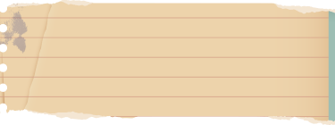

ПРО КУРС
Я знаю, як допомогти тобi впоратися зi всiма освiтнiми труднощами та не втратити голову в гонитві за відмінними результатами. Я вірю, що навчання може бути приємним! Пізнавати історію рідної держави, дізнаватися про подвиги та біди своїх пращурів – наче шукати скарб, захований у руїнах древніх цивілізацій.
Вміст курсу – 70 уроків
Тривалість курсу – 9 місяців
Як часто займатися? – 2 рази
на тиждень по 1 годині
Який вигляд мають заняття? – проведення індивідуальних лекцій за власним графіком, або в
групах до 10 осіб

Коли проходять заняття?
– за визначеним графіком
Вартість – 550 грн/місяць
Переваги курсу
01
Я говорю з учнем тією мовою, яку він почує. Жодних «офіціозів» та упереджень.
02
Впродовж 3 років я виточувала власну систему занять, котра справді ДІЄ! Мої учні не
зазубрюють, вони – розуміють.
03
Курс читається на групових заняттях, проте я завжди відкрита до діалогу та без
проблем проведу індивідуальні заняття тим, хто трохи відстав або прагне знати
більше.
04
Моя програма складена на основі авторського підручника, який доповнить курс
безоплатно!
05
Година наших занять мине безболісно: з жартами, реальними прикладами та живим
діалогом.
06
Я завжди слідкую за результатами учнів та розумію прагнення батьків бачити прогрес
від занять зі мною. Жоден онлайн-урок не проходить без домашньої роботи та її
ретельної перевірки!
Відгуки

Аня, 186
Маргарита досить уважна, знає свій
матеріал ну
просто
на зубок. Уроки проходять завжди відмінно, а якщо мені щось незрозуміло, я можу
завжди
перепитати, дізнатися, а вона пояснить: що? як? чому? В цілому я дуже задоволена
курсом!
СОФІЯ, 178
Маргарита - чудова репетиторка, вчить за
своїми матеріалами та зрозуміло, часто з якимось гумором викладає свій предмет.
Подобається те, що після кожної пройденої теми дається тест на рівень знання
пройденого навчального матеріалу, де твої неправильні відповіді не ігноруються, а
повторно розбираються.
МАРІЯ, 190
Маргарита стала моєю першою репетиторкою,
проте враження від уроків приємні! Працювати з нею легко, все зрозуміло та доступно,
цікаво.
Богдан, 195
Міцненько, добренько. Уроки ємні, без зайвої
інформації, але з цікавими фактами. Особливо запам'яталася розповідь про Олену
Вітер. Гарний бал я отримав через правильно розставлені акценти зі вчительської
сторони.
НАСТЯ, 184
Маргарита чудово знаходить підхід до кожного
учня та дає найпотрібнішу інформацію в цікавому вигляді. Її спосіб навчання допоміг
мені краще засвоїти матеріал. Пам'ятаю, як сиділа на іспиті та побачила портрет
Сагайдачного, і в мене в голові пролунав голос Маргарити, який розповідав, чим же
таким важливим нам ця особа запам'яталася.